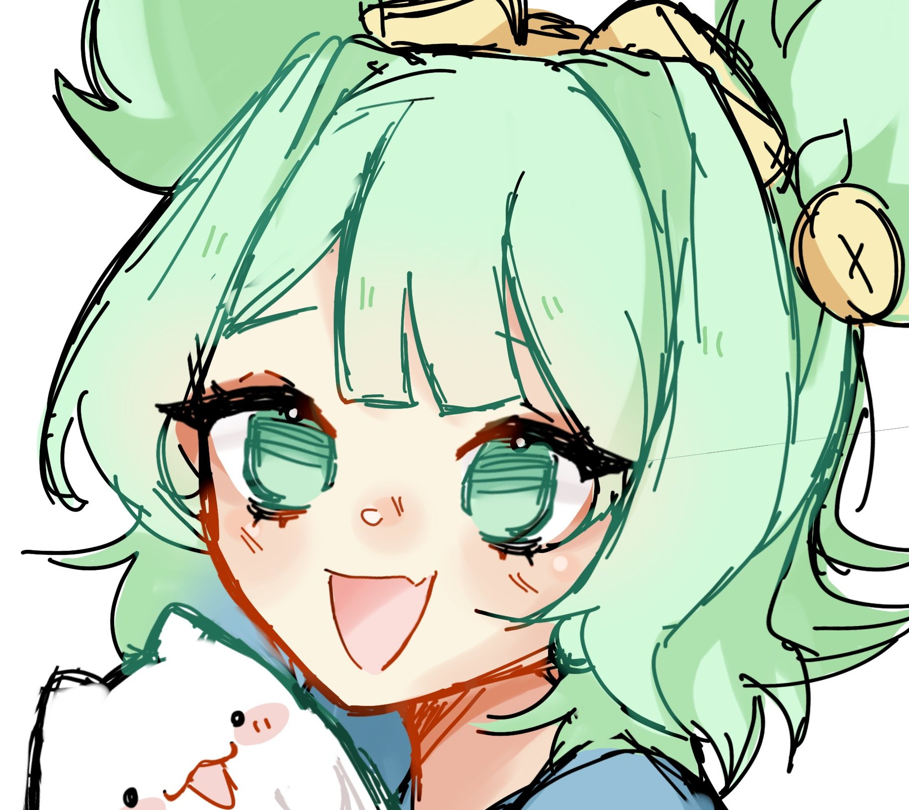

Projects linked
Hub personnel / social landing
Une page d entree qui porte vraiment ton personnage.
Cette version montre comment la DA peut vivre sur un site principal: hero fort, cartes bento, liens mis en avant et un ton plus personnel.
Le hero porte le personnage, puis le relais passe vite aux projets, aux liens et aux outils pour garder une lecture nette.
Identity system
Character roles

Projects
Liens et entrees principales
Le layout reste doux et authored, mais les cartes restent assez utilitaires pour presenter du vrai contenu.
Skins library
Explorer tes skins, favoris et tags avec une presentation plus editoriale.
Twitch
Streaming, archives et entree directe vers le contenu chaud.
LiveEntrer
GitHub
Experiences, systemes partages et archives techniques.
CodeLire
Zest
Fast links, short URLs et actions rapides sans friction.
ToolLancer
Visualiseur d area
Une structure plus dense, orientee resultat et data.
Collection browse
Catalogue avec filtres, cartes media et tags lisibles.
Shortener
CTA rapide, resultats clairs, historique simple.